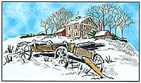
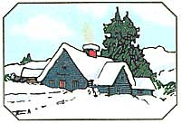

Land and the Law
Your questions just keep on coming.
It is apparent from the number of letters we receive that easements are one of the most troubling aspects of living in the country. Easements, to define them briefly, are contracted agreements to use another person's land. Because country roads are so far apart, most country dwellers find themselves concerned with easements in one way or another. Problems occur because many people don't understand their rights and obligations under easements and often tread on the rights of others. When purchasing property, either with an easement over it or served by one, be sure you understand the relevant state laws. Don't rely on the advice of neighbors and friends since many people hold strong beliefs regarding easements but don't know all of the facts. If your realty agent can't give you clear concise information regarding easements, ask him or her to direct you to someone who can.
I purchased 27 acres in the woods. I own and pay taxes on a 26' stripof land that leads to my property. This strip of land is also an easement for 5 houses and 2 fields that don't belong to me. The road that is there now is only wide enough to fit one car. I want to put a road there that is wide enough for two cars and I have 26' to do it with. My neighbors are all telling me that they all own the road in front of their house and I cannot widen the road because it will be in their front yard then. What they are claiming as their front yard is part of the 26' I own. What can I do?
-Brian EspenschiedFayetteville,AK
Since you actually own the land the road is on, you probably can widen it without permission from your neighbors. On the face of things, it appears the neighbors shouldn't have extended their yards onto your land. They simply have the right to drive over your land to reach their property. It might be a good idea to check with an attorney to make sure none of the neighbors can make a claim to any of the land through adverse possession. The attorney can also tell you if there are any state regulations that affect your proposal.
Another consideration: do you want to widen the road to handle increased traffic due to a proposed development on your land other than a single family residence? If so, you should check your deed(s) to make sure there are no restrictions against your intended use of the land or the road. You should also check for local prohibitive zoning, probably at the county level.
This is a perfect example of easement users misunderstanding their rights under an easement. A word of advice: as a courtesy you may want to provide proof to your neighbors that you actually own the land before commencing any roadwork. You may also want to weigh the benefits of a widened road against the possibility of living with the resentment of your community. Cultivating good neighborly relations is always a prime quality of life consideration in the country.
Our problem is rather lengthy to explain. One part leads to another. Part one: if you buy property on the side of some other property you own do you have to build your own right-of-way road to your old property? Our original right-of-way was barricaded so we could not get to the back of our property. Part two: the neighbors on our east side removed the land marker in the middle of the road and moved it over about 13 feet This cut down the footage across the front so the person who owned this piece before us moved the marker on the west side over the same amount. We found this out a little after we signed papers on the land . The previous owner has now put up all his fences to coincide with this "new" arrangement. If we honestly try to fix the west side marker we then have to move the entire fence and then we still would lose out 13' or more on the front of our property. To make matters worse, on the east side the neighbor put up a hurricane fence some time ago before we bought the land and because of the footage of the fence, he put it on the property we bought. When confronted by the prior owner, the neighbor said he was not ready to move it. Now we are fighting this ourselves. Please send us some advice! We are going nuts here.
-Ricky and Veronica LeBlanc Welsh, LA
What a mess! The answer to the first part of your question is relatively simple. Under most state laws, original access to property is not given up even though the owner buys other adjacent property. The road to your original acre probably should not have been barricaded against you. A quick check with a local attorney should set you straight regarding Louisiana laws on this score. Seek out a local real estate expert, please.
The second part of your question is a bit more complicated. Your letter did not say how long ago the property lines were readjusted by the neighbors and how long the fencing has been in place. It may be that this was done so long ago that new property lines have potentially been established. In most states this is particularly true if no one took action to fight the situation immediately after it happened. However, such changes are not necessarily automatic and must be verified by the court. It is costly to both pursue and fight such an action.
It might be simpler and less costly to get together with the neighbors and establish a boundary line adjustment to reflect the property lines as they are now. Such an agreement must be a formal document signed by all affected landowners and then entered into the public record. You should check with an attorney regarding the boundary line problem. If you pursue restoring the old property lines or seek an adjustment you will definitely need advice on how to proceed in accordance with your own state laws. I read with interest your article "The Letter and the Law" in the July '97 issue. The driveway easement section specifically sounded very familiar to me as I am currently involved in a similar situation. I would be interested in finding out case law, precedents, etc ., that back up the statements in this portion of your article as I am getting threatening letters from the easement user's attorney. To make a long story short, they have a 58 foot ingress/egress easement through my property. The roadway that serves this easement is only 30 feet wide. The other 28 feet is part of my lawn. The letters from the attorney tell me that I cannot plant trees or shrubs on my lawn or build a fence in that area even though it clearly will in no way hinder his coming and going. They tell me that they have the right to drive on my lawn and may want to some time, therefore if I plant a tree or build a fence, they have the right to remove it at my expense.
Please send me any pertinent informa tion that you have that your article was based on, especially where you stated that "he may not utilize any more land than is necessary for his purposes no matter how wide the easement description is ."My attorney is interested to use your information if it can be helpful in the state of Kansas.
-August Steffen Basehor, KS
The purpose of this column is to advise landowners on all aspects of rural land ownership. Legal advice is never given. As every state has slightly differing laws regarding real estate, this column can give general advice only. It does try to alert people as to when they need to seek an attorney. As you have discovered, not all attorneys are familiar with easement laws in their own state. It is a field unto itself. You do have a problem with the easement user and his attorney, whose letters are typical of attorneys who think they are more conversant with easements than they are in actuality. Since your own attorney is not an expert on easements, ask to be directed to one who is. Or ask a busy local realty agent or title company to direct you to one.
Generally, a driveway may meander anywhere within the confines of an easement in order to utilize the most convenient ingress and egress. The landowner has the right to use all of the land within the easement that is not needed for the driveway. There are many more rights and obligations for both the landowner and easement user. Kansas will also have specific laws that pertain to easements. Good luck in finding the expert you need. I am in the process of buying land. I have received the preliminary title report and there are two pages of fine print spelling out conditions, stipulations, and exclusions, and one page of general exceptions. What is amazing is that these three pages detail what the title company won't insure against. Exactly what do they insure, if anything?
-Brenda Whitehill Oroville, WA
Good question. The preliminary title report and policy is usually paid for and provided to you by the seller. In essence, the seller has hired the title insurance company to prove to you that the seller has a marketable title that can be passed on to you at closing. The title company does this by checking the public record for the chain of title to make sure there are no clouds or incurable defects to the title. As an example of a cloud, take the case of a great aunt who had an interest in the property and whose estate was never properly settled after her death. Until this is taken care of and the heirs sign and record the necessary documents, the seller cannot give you a clear title. On the day you complete your purchase and the sale is closed, a title policy is issued to you. On that day the public records are checked again to make sure no liens or other defects have cropped up to affect the title.
The title policy does not insure against a whole host of things like zoning, for example. All of that fine print is concerned with things of that nature and has nothing to do with the seller's ability to give you a title to the property. The title report is very useful in that it will point out to you, in the special exceptions section, any rights to the property that have been sold or deeded away in the past and that you will not receive when you purchase the property. Timber and mineral rights are common examples of country property rights that do not always go with the sale. If you thought you were buying land or a house that included rights that show up as exceptions in the title report you have the right to refuse to go through with the sale, provided the deal was written correctly. Buying land is a big step. You will enjoy it for years to come.
Send your questions to "Country Real Estate," c/o Mother Earth News, P. O. Box 129. Arden, NC 28704 or via e-mail at MEarthNews@aoL.com. Enclose a photo and we'll make you famous in the bargain. Please keep in mind that state laws vary and that this column is no substitute for local legal advice.
|
 |
 |
|